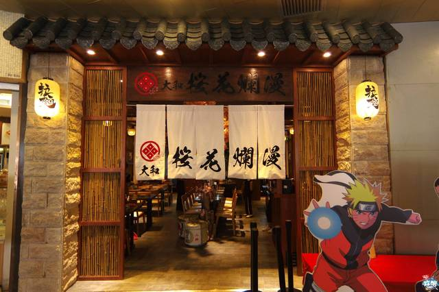

首页
餐厅门店
主要美食
特色饮品
最新推荐
联系我们
会员注册
问题反馈
what's New
最新日式菜品
这里介绍的是最新推出的日式菜品，日本料理口味比较清淡 ，注重保持食品原来的风味和食物的营养，少油少盐，食物较多使用海产品 为原料，是符合现代人饮食观念的健康菜式。
本店最新聘请日本以及初始掌勺日式菜品，地道新鲜，这里推介 的四款菜点为厨师推荐的主打菜品，希望能给你带来愉快的饮食享受
寿司
剁鲜吞拿鱼腩卷
筑地海鲜太卷
脆皮吞拿鱼甜筒
寿司
寿司是日本的传统美食，他是由上选的大米经过特殊工艺配以各类刺身精致而成。有人说日本的寿司就像 中国的饺子，不同的是中国的饺子由多种馅儿组成，而寿司是由多种鱼组成。相同或之处是中国的饺子有 多种，寿司的款式数不清
日本人和中国人一样，都是拿筷子吃米饭的民族，但是由于寿司的长期发展，在吃上形成了一种约定俗成 方法，所以找到和了解吃寿司的诀窍，或许更能体验到寿司的美味
剁鲜吞拿鱼腩卷
餐牌上没有的，老饕懂得叫，餐厅自然会做。剁成茸的吞拿很滑，软绵绵，像在吃棉花糖，夹着板，又香又鲜。 记得手卷端来就要吃，搁久了紫菜会变稔。
卷物应该是寿司的进化。同样的饭和生鱼，就是多了一层紫菜做的外衣，卷成不同的形状。圆锥形手卷，有点似 甜筒，分别只在于这“甜筒”是用饭做的，不冻。拿着一个，用吃甜筒的方法吃，由顶部打围圈着紫菜边开始吃， 一个手卷倒也可以然你夹来异国风情。
筑地海鲜太卷
专程由日本筑地鱼市场引入大豆皮取代紫菜。但吃着黄绿色的大豆皮不觉得特别，但包着吞拿鱼、三文鱼、鸡蛋以及青瓜的 海鲜太卷，不同的生鱼鲜味有层次的表露出来，多亏这小巧的大豆皮。
脆皮吞拿鱼甜筒
吃手卷，还是坐店里好，可以看着师傅做，师傅递过来便吃，痛快。手捏寿司考验师傅的力度，手卷则考速度。做卷物要快，卷物送到食客面前，紫菜还是脆的才叫合格。
因为寿司饭是热的，热力会令紫菜变软，由卷到完成最好在一分钟内。刚做好的手卷要立即吃，这时咬落紫菜才会“咔擦”、“咔擦”响，向薯片一样，脆的过瘾， 最经典的是吞拿鱼腩葱卷，两大片鱼腩剁成茸，加了芝麻拌匀，和饭卷起，加了芝麻吃。这个卷物要做的好吃，关键不在于吞拿鱼腩够不够肥和多，剁茸的吞拿鱼腩油香自然 多，反正吃的是口感，饭和吞拿鱼腩的比例要掌握好，最好四、六比例，一口里面有饭有吞拿鱼腩，吃起来才不觉得腻。吃来吞拿鱼腩与饭交缠，每粒饭也包着鱼香，吃完留 下一口鲜。
其他店铺

徐汇总店
静安分店
黄埔分店
免费注册
|
关于我们
|
诚聘英才
|
网站导航
Copyright© 2021,naruto.cn, all rights reserved